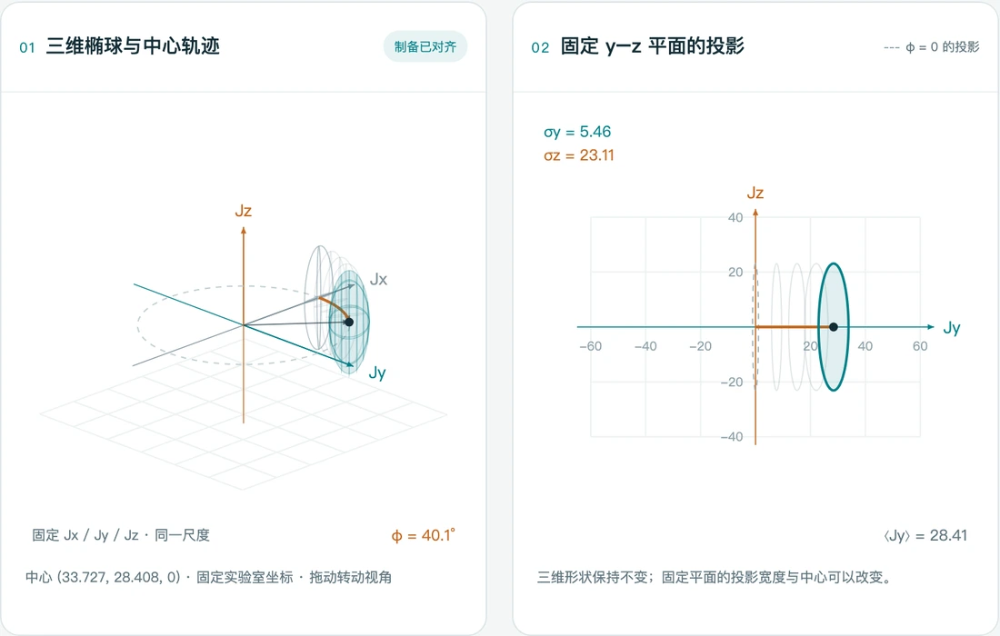

QUANTUM METROLOGY
OAT Spin Squeezing
Explore spin squeezing, axis alignment, and phase encoding with linked 3D and 2D views.
自旋压缩、对齐与相位编码的交互演示。
Interactive visualizations of quantum dynamics and metrology.
量子动力学与量子计量的交互演示。

QUANTUM METROLOGY
Explore spin squeezing, axis alignment, and phase encoding with linked 3D and 2D views.
自旋压缩、对齐与相位编码的交互演示。